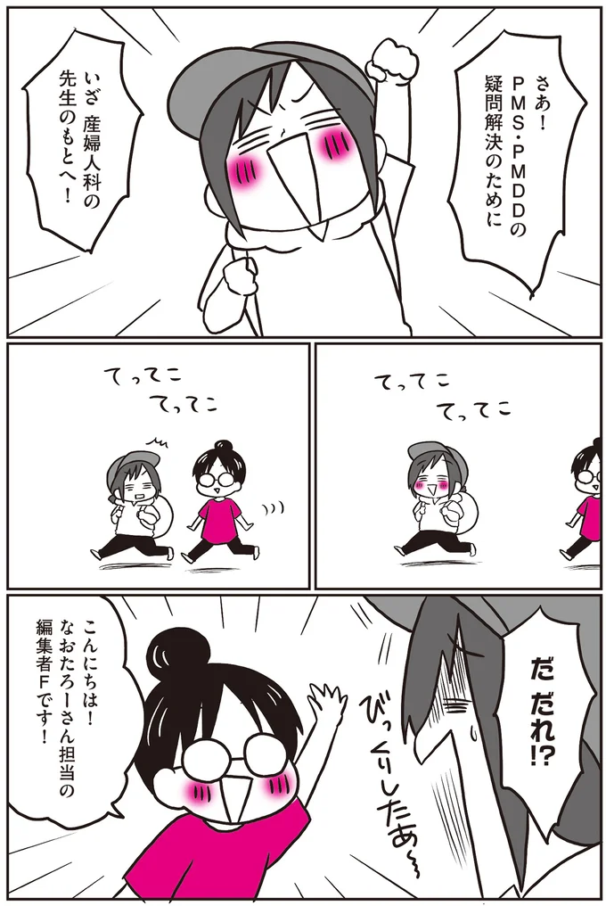
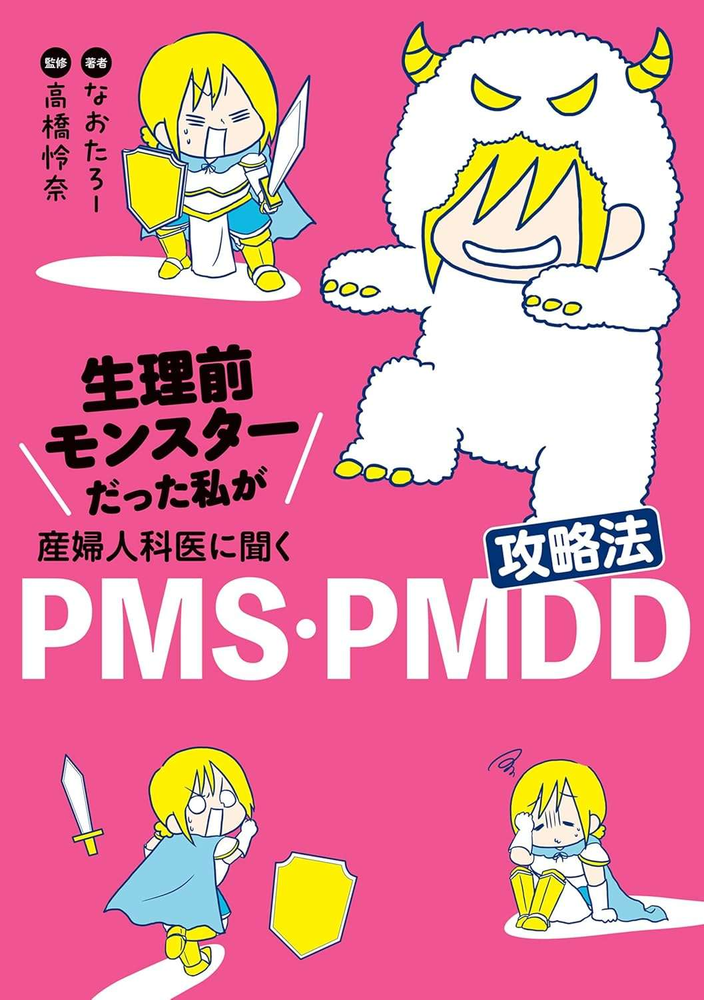

“我是一个经前怪物，我向我的妇产科医生询问如何克服经前综合症和经前抑郁症” 首先，什么是经前综合症/经前抑郁障碍？  ▶在Renta上阅读“当我还是经前怪物时，我向妇产科医生询问如何克服经前综合症和经前抑郁症”！ ▶阅读亚马逊上的“我曾经是经前怪物，问我的妇产科医生：如何克服经前综合症和经前抑郁症” 【阅读更多】 1 2 3 4 5 >>  “我是一个经前怪物，我向我的妇产科医生询问如何克服经前综合症和经前抑郁症” （漫画：直太郎、监督：高桥丽奈／KADOKAWA） ▶Renta!▶亚马逊（精装本）▶亚马逊（电子书Kindle版）▶乐天图书（精装）▶乐天图书（电子书工房版）▶ebookjapan▶BookLive!▶BOOK☆WALKER *此页面通过联属计划赚取收入。 联盟横幅 154 开始 未选中 = 显示 联盟横幅 154 结束 2025 年 4 月 12 日 *本文部分摘录自漫画：直太郎、监督：高桥丽奈所著《我曾经是经前怪物，向我的妇产科医生询问如何克服经前综合症和经前抑郁症》（KADOKAWA）一书的部分摘录和编辑。